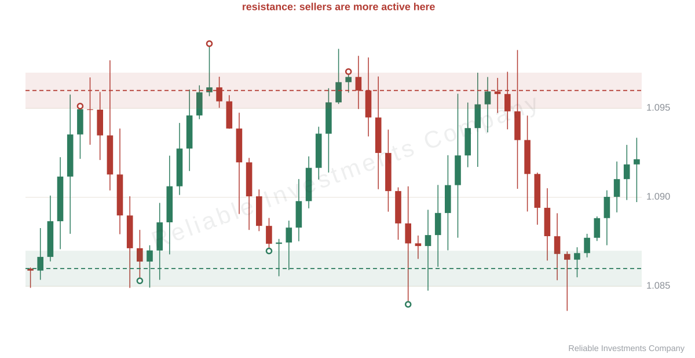

Workbook / Why support and resistance stops working
Why support and resistance stops working
“The level held three times and failed on the fourth.” That sentence explains nothing, because the level did not fail. It did exactly what a level does: every approach spends the orders that hold it.
Three groups stand at every level
At any mark three interests sit at once.
The first is limit orders. Somebody decided in advance: at this price I buy. The second is the stops of those who entered higher: their exit is a market buy, and that works as support too. The third is the traders waiting for confirmation — they do nothing yet, but their interest is what makes price move fast once the level is broken.
The first touch works on the first and second group. Then the boring part begins: some of the limits were filled, and nobody replaced them.
A touch is a spend, not a gain
Four approaches in a row do not strengthen a level, they empty it. By the fourth, less sits behind the mark than at the first — and what bounced before now breaks.
From this follows a rule that looks backwards: the fewer touches a level has, the better it holds. But an untested level is not a level either — one approach is an accident, two or three make a mark, and after that the mark is mostly spent.
A level is not a wall that gets thicker with every hit. It is a stack of obligations, and obligations get paid.
A level is a band, not a line
A line on a chart is a convenient fiction. Orders do not line up at one price: one buyer at 1.0848, another at 1.0853, somebody’s stop five pips lower. That is why a real level always has width.
Twenty to thirty pips is the usual width on currency pairs; indices and gold are wider; a single stock depends on its own volatility. The width is visible in the candles: if bounces happened across twenty pips, that is where the orders stood.
So draw the core of the zone along the bodies — where deals actually happened — and the borders along the wicks, where stops fired. A wick that sticks thirty pips above the rest is more likely one sweep than a border.

Two practical consequences. Entering inside the zone is normal, not late: an entry at the top border and an entry in the middle differ by the price, not by the idea. And the stop goes beyond the far border, not beyond the line — otherwise it is taken out by noise that has nothing to do with the level changing hands.
What still makes a level stronger
- Timeframe. The daily mark beats any five-minute line. More people see it, more orders sit there.
- Confluence. A round number, last week’s high, yesterday’s close in the same place. When several reasons point at one spot, the stack of orders is thicker.
- Sharpness of the departure. A move away from the level in one impulse means there was size behind it. Price that crawls away does not say that.
- Freshness. A level printed last week beats one from two months ago: the orders behind the old one have been paid.
Why price bounces at all
Not because a line looks good on a chart, but because other people’s obligations sit on it. Once those obligations are filled, the level breaks — and, just as often, the broken resistance starts working as support. Whoever sold at resistance buys on the return to close the trade; whoever waited for the break enters. The mark changes hands, and the price where it happens stays the same.
That is role reversal, and it is the reason a broken level is still worth drawing.
What to do with this
If you trade: draw zones instead of lines, count the touches, put the stop beyond the far border. A fourth touch is a different situation from a first, and the position size should not pretend otherwise.
If you do not trade and somebody explains a trade to you: ask which timeframe the level came from and how many touches it had. An answer with a range, a timeframe and a touch count means the person looked at orders. An answer of “1.0850” means a line was drawn on a picture.
In short
- A level works while orders remain behind it, and every touch spends them.
- After three or four touches the mark weakens rather than strengthens.
- A level is a band: core on bodies, borders on wicks, stop beyond the far border.
- Timeframe, confluence, a sharp departure and freshness are what actually hold.
Next: how to tell a false break from a real one — four signs on a bare chart.
Keep reading
Read the whole workbook
14 chapters, 44 charts, practice tasks and a checklist. Free, no sign-up.
PDF, 69 pages. Code word PRACTICE.